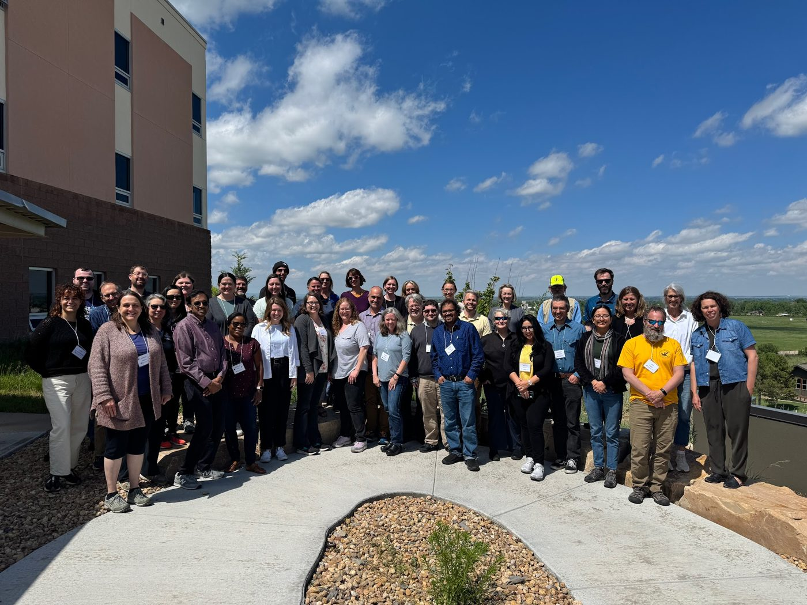
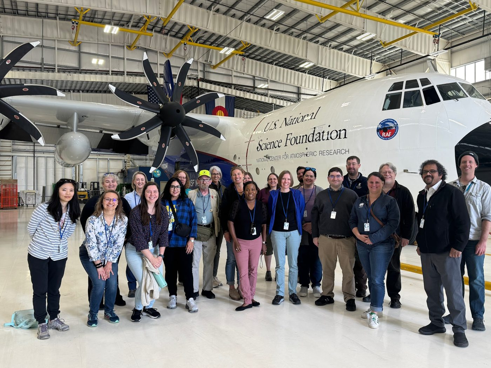
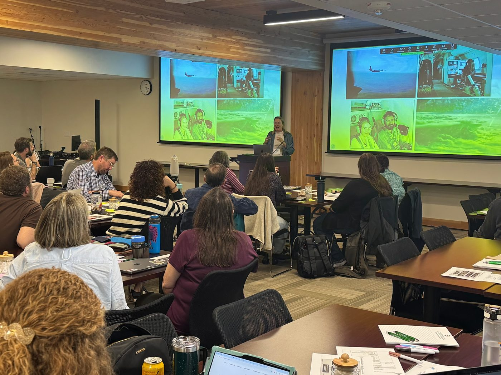
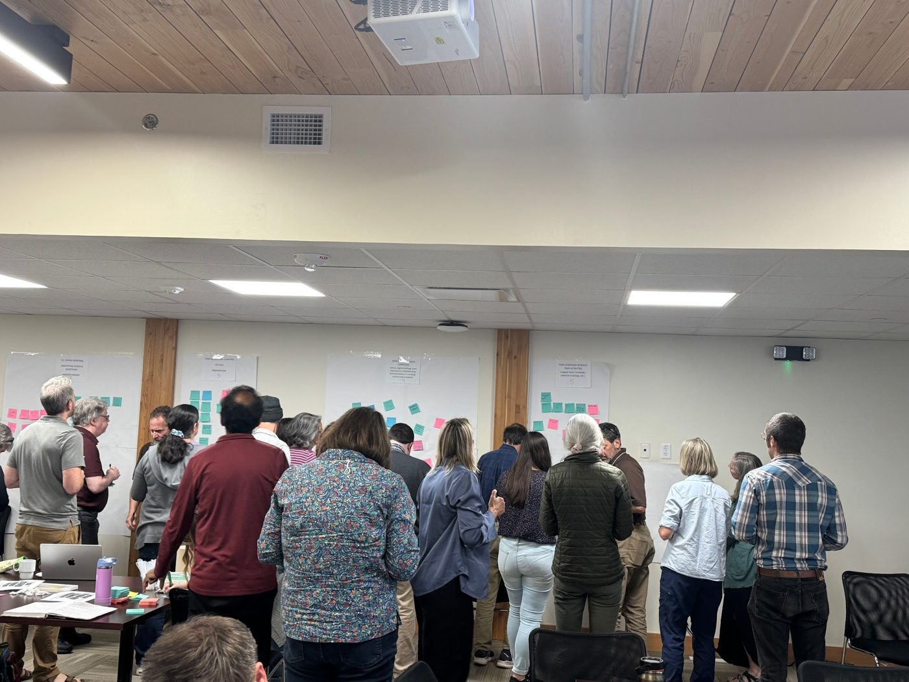
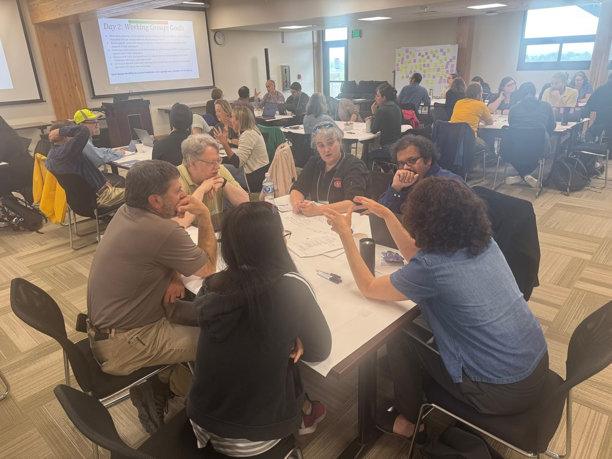
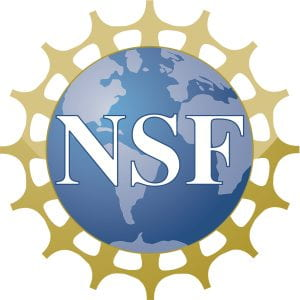
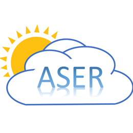

Research Projects › ASER › 2025 Field Campaigns Workshop
The “Educational Experiences in Atmospheric Science Field Campaigns: A Community Workshop” met at Colorado State University in Fort Collins, Colorado, on May 28–30, 2025.

Field campaigns give students observational and learning experiences they cannot get in a classroom. Campaigns run in short windows, draw on many kinds of expertise, and offer networking and mentoring that can shape a career, and graduate students often depend on campaign data to finish their degrees. The workshop brought together 43 participants from observational science, atmospheric field operations, education research, student programs, and social science to ask how we ensure that students learn in these settings, how we support their success, and how we open field campaigns to a broad range of learners.
On the first day, participants toured the NSF NCAR Research Aviation Facility in Broomfield, heard IGNITE talks on ASER scholarship and on airborne, ground-based, and international campaigns, and took part in a gallery walk that broke a field campaign into its phases: the scientific proposal and science questions, post-selection planning, deployment, and post-campaign science team activities. For each phase, participants wrote down what students could learn and what education research questions could arise. On the second day, working groups organized around themes from the gallery walk (research design and proposal writing, team building, skills and assessment, sense of belonging, professional identity, access, and resilience) wrote research questions, identified the evidence needed to judge different educational approaches, and drafted action plans. The final half day turned the working groups’ takeaways into a community statement.




The community statement describes a shared vision in which atmospheric scientists and education researchers work as full partners in designing, carrying out, and evaluating field campaigns, with education research counted as part of a campaign’s intellectual merit rather than added on afterward. In the short term, it calls for formal points of connection between the two communities, more visibility for ASER in disciplinary journals and at meetings such as AMS and AGU, a standing online community hub, and a survey of existing field-based education programs and the barriers students face in reaching them. Its long-term aspirations are to make education research a standard component of major field campaigns, to establish education-focused field campaigns that serve as testbeds for learning research, and to grow pilot collaborations into a fully integrated education and science community.
The organizers, Melissa Burt and Emily Fischer (Colorado State University), Rebecca Haacker (NSF NCAR), Peggy McNeal (Towson University), Dawn Kopacz (University of Nebraska–Lincoln), and Kathy Quardokus Fisher (University of Notre Dame), reported the outcomes in a meeting summary in the Bulletin of the American Meteorological Society (Haacker et al., 2026) and in a poster at the 2026 Earth Educators’ Rendezvous. Researchers and educators interested in joining this community can contact Melissa Burt.
Download the 2026 EER poster (PDF) Read the BAMS meeting summary Workshop website and Community Statement

